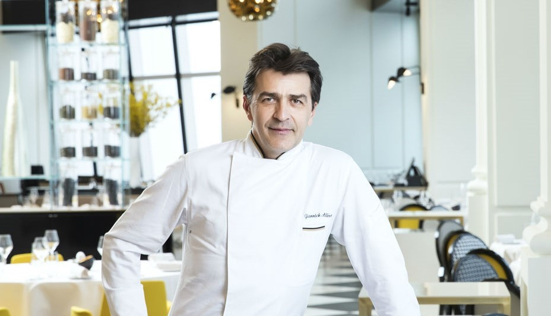

팔진지미(八珍之味)는 옛날 중국에서 성대한 음식상에 갖춘다고 하는 진귀한 여덟 가지 음식의 아주 좋은 맛을 뜻합니다. 여경옥 chef는 '팔진진미'의 구현을 철학으로 하며, 정교한 조리 기법을 통해 광동식, 북경식 요리의 정통성을 유지하고, 창의력을 가미해 최상의 맛을 표현합니다.
피에르 가니에르는 혁신적인 실험정신과 예술적 감각으로 정통 프렌치 요리를 재탄생시킨 chef입니다. 신의 즐기는 요리, 요리계의 피카소, 식탁의 시인 등 경의에 가까운 찬사를 받으며 프랑스 요리의 지존으로 칭송받고 있으며 식재료의 조직과 질감을 과학적 분석을 통해 다양한 조리법을 개발하여 이를 바탕으로 한 선과 색을 살린 예술적 감각의 독창적인 요리를 선보입니다.
천덕상 chef는 최초로 한국음식을 고급코스화한 한식의 대가입니다. 입으로 구전되어 내려오던 한식을 현대적인 시각에서 재해석하여 여러 개의 요리 특허를 보유하고 있습니다. 고급적이고 깔끔한 한식 요리를 즐기실 수 있습니다.

야닉 알레노 chef는 2019년 기준 청 8개의 미쉐린 스타를 얻었으며 전 세계 유일의 3스타 레스토랑 두 곳을 동시에 등재시킨 chef입니다. 프랑스 현지의 트렌드를 한국의 제철 식재료에 접목한 다양한 요리를 즐기실 수 있습니다.